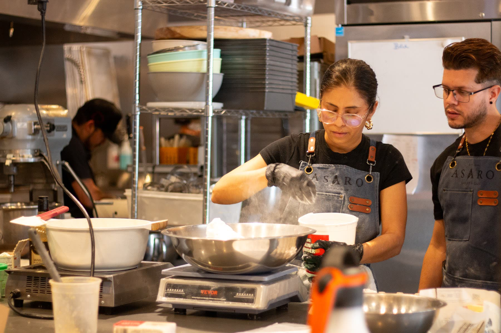

Our Story
Tzion and Jessica Barsheshet began their culinary adventure over 30 years ago in Israel, owning multiple restaurants, bars, and pubs. Asaro Bakery and Cafe is the continuation of their journey, but this time, it is accompanied by their children, Timna and Jason.
Coming from the fashion industry, Timna will head the bakery as Asaro’s head baker.
Jason, coming from a business and finance background, will head the operations side of the business.
The heart of Asaro Bakery & Cafe lies in our talented team of baristas and bakers, who bring expertise, creativity, and warmth to everything they do. Our menu, inspired by both local flavors and global trends, features a variety of baked goods, from classic croissants to innovative seasonal specialties. Sustainability is at the forefront of our operations, as we strive to minimize our environmental impact and support local producers.
Our cafe is not just a business; it’s a community hub, where we host events, workshops, and support local artists. We invite you to visit Asaro, where every visit is an opportunity to indulge in the simple pleasures of great coffee and delicious treats.